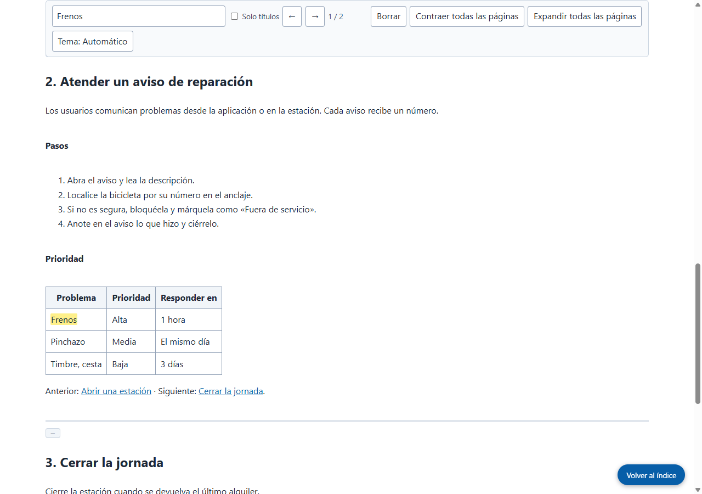

Resultado real de Grab All Files
Cuatro páginas del manual combinadas en un solo archivo HTML (Pro)
Partiendo de la página de índice de un manual ficticio, se siguieron los tres capítulos enlazados y las cuatro páginas se combinaron en un solo archivo HTML. El índice de la parte superior salta a cada capítulo y el cuadro de búsqueda recorre todo el documento. Los enlaces entre capítulos llevan a la página correspondiente dentro del archivo guardado. La figura se almacena en el archivo como imagen.
Archivos generados
El HTML guardado, abierto y buscando «Frenos» (captura hecha por el sitio)

Cómo se hizo
- Página de origen
- /samples/source/es/bike-share-handbook/
- Extensión
- Grab All Files 5.8.31
- Navegador
- Chrome 156.0.8078.48 (Windows 11)
- Plan
- Pro
- Fecha
- 2026-10-28
- Ajustes
- Páginas: Seguir los enlaces de esta página (4 páginas)
- Aspecto: Fácil de leer
- Salida: HTML con índice y búsqueda
- Datos para IA: No generar (predeterminado)